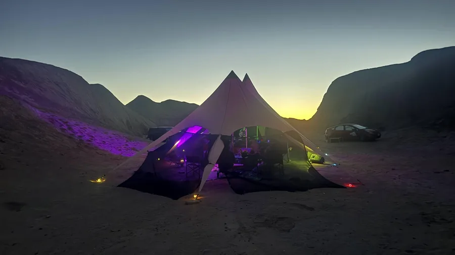
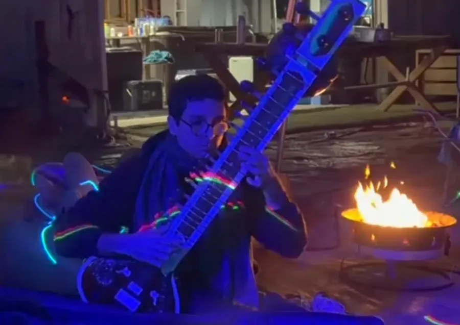
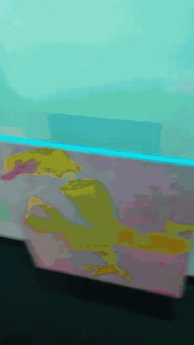
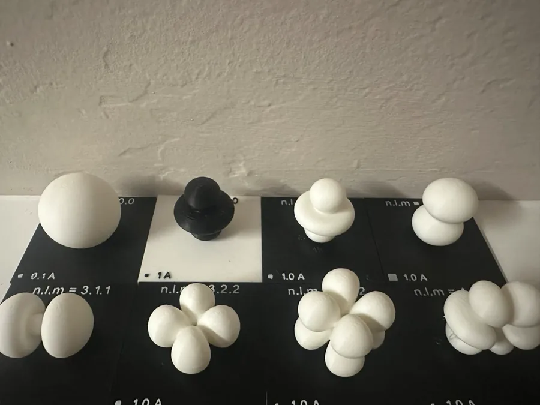
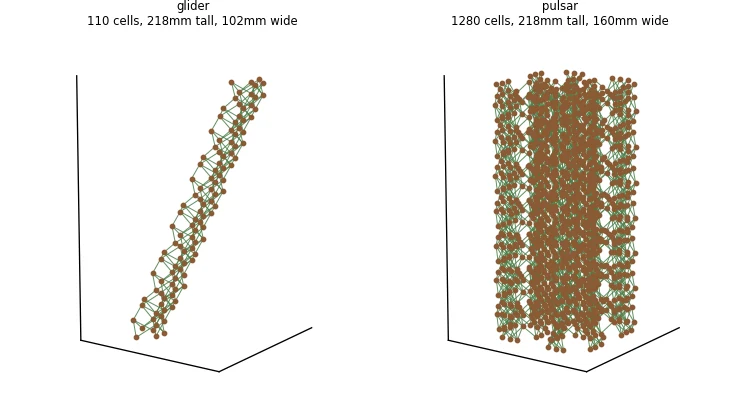

Music events in remote places
Hosting music events in remote locations, with live and electronic artists. I organize the events end to end: scouting locations, handling artist relations, and running the night itself.
Hosting music events in remote locations, with live and electronic artists. I organize the events end to end: scouting locations, handling artist relations, and running the night itself.


A hybrid piece of art, movement and color theory, made in collaboration with my partner. Three canvas paintings hang from string and are raised and lowered by a modded Lego Mindstorms unit. Installed at a music and art show in Oakland.

Solves the hydrogen wavefunction for any valid set of quantum numbers (n, l, m) and turns the result into a 3D-printable solid. Isosurfaces of the real part of the wavefunction, with optional Gaussian smoothing, automatic scaling for the print bed, quantum-number labels and an Ångström scale bar. The printed models come out print-in-place, on a base.

Turns the time axis of Conway's two-dimensional Game of Life into a third spatial dimension that can be 3D printed. Live cells become parts on a cubic lattice, and struts bridge each generation to the next.
